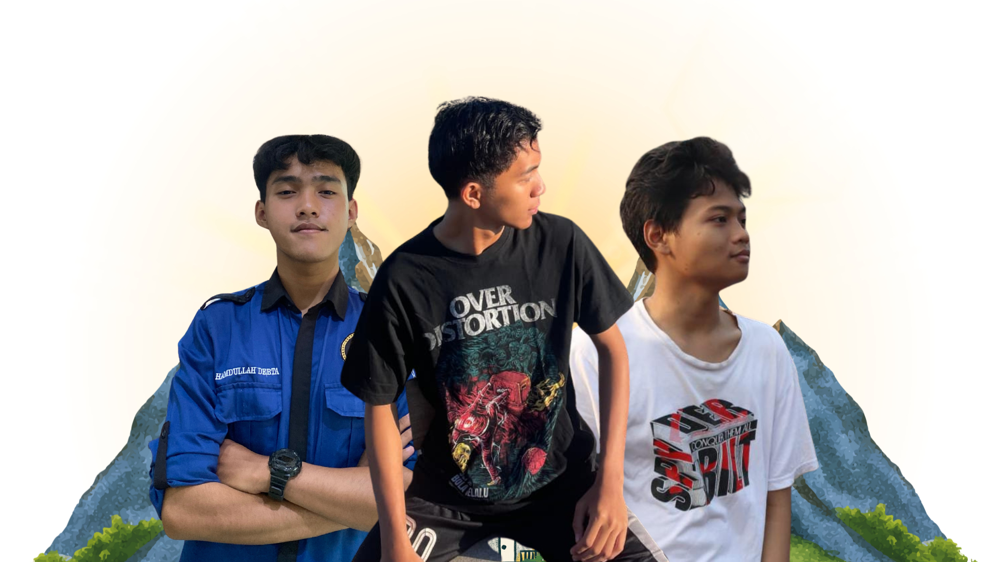

🎯 Lowongan Kerja IT
Alumni berprestasi dari Jurusan TKJ
Statistik dan informasi alumni TKJ
Total Alumni
Persentase alumni berdasarkan bidang keahlian
Perkembangan jumlah alumni yang bekerja (5 tahun terakhir)
Update terbaru seputar dunia TKJ dan teknologi
 Teknologi
15 Jan 2025
Teknologi
15 Jan 2025
Lab TKJ SMKN 1 Seyegan mendapat bantuan peralatan baru dari pemerintah untuk meningkatkan kualitas pembelajaran siswa...
Baca Selengkapnya
SEYEGAN - Lab TKJ SMKN 1 Seyegan mendapat bantuan peralatan baru dari pemerintah untuk meningkatkan kualitas pembelajaran siswa. Bantuan ini meliputi 20 unit server Dell PowerEdge terbaru, 50 switch managed Cisco Catalyst, dan berbagai perangkat networking modern lainnya.
Kepala Jurusan TKJ, Bapak Agus Priyanto, S.Kom., M.T., menyatakan bahwa upgrade ini sangat penting untuk mempersiapkan siswa menghadapi tantangan industri 4.0. "Dengan peralatan baru ini, siswa dapat praktik langsung dengan teknologi yang digunakan di dunia kerja," ujarnya.
Peralatan baru tersebut akan digunakan untuk praktikum mata pelajaran Administrasi Infrastruktur Jaringan, Administrasi Sistem Jaringan, dan Teknologi Layanan Jaringan. Diharapkan dengan adanya upgrade ini, kompetensi siswa TKJ semakin meningkat dan siap bersaing di dunia kerja.
Selain server dan switch, lab juga dilengkapi dengan router mikrotik, access point, dan perangkat keamanan jaringan seperti firewall. Total investasi untuk upgrade ini mencapai 500 juta rupiah, yang didanai oleh bantuan pemerintah pusat melalui program revitalisasi SMK.
Teknologi
15 Jan 2025
Lab TKJ SMKN 1 Seyegan mendapat bantuan peralatan baru dari pemerintah untuk meningkatkan kualitas pembelajaran siswa...
Baca Selengkapnya
SEYEGAN - Lab TKJ SMKN 1 Seyegan mendapat bantuan peralatan baru dari pemerintah untuk meningkatkan kualitas pembelajaran siswa. Bantuan ini meliputi 20 unit server Dell PowerEdge terbaru, 50 switch managed Cisco Catalyst, dan berbagai perangkat networking modern lainnya.
Kepala Jurusan TKJ, Bapak Agus Priyanto, S.Kom., M.T., menyatakan bahwa upgrade ini sangat penting untuk mempersiapkan siswa menghadapi tantangan industri 4.0. "Dengan peralatan baru ini, siswa dapat praktik langsung dengan teknologi yang digunakan di dunia kerja," ujarnya.
Peralatan baru tersebut akan digunakan untuk praktikum mata pelajaran Administrasi Infrastruktur Jaringan, Administrasi Sistem Jaringan, dan Teknologi Layanan Jaringan. Diharapkan dengan adanya upgrade ini, kompetensi siswa TKJ semakin meningkat dan siap bersaing di dunia kerja.
Selain server dan switch, lab juga dilengkapi dengan router mikrotik, access point, dan perangkat keamanan jaringan seperti firewall. Total investasi untuk upgrade ini mencapai 500 juta rupiah, yang didanai oleh bantuan pemerintah pusat melalui program revitalisasi SMK.
Teknologi
15 Jan 2025
Lab TKJ SMKN 1 Seyegan mendapat bantuan peralatan baru dari pemerintah untuk meningkatkan kualitas pembelajaran siswa...
Baca Selengkapnya
SEYEGAN - Lab TKJ SMKN 1 Seyegan mendapat bantuan peralatan baru dari pemerintah untuk meningkatkan kualitas pembelajaran siswa. Bantuan ini meliputi 20 unit server Dell PowerEdge terbaru, 50 switch managed Cisco Catalyst, dan berbagai perangkat networking modern lainnya.
Kepala Jurusan TKJ, Bapak Agus Priyanto, S.Kom., M.T., menyatakan bahwa upgrade ini sangat penting untuk mempersiapkan siswa menghadapi tantangan industri 4.0. "Dengan peralatan baru ini, siswa dapat praktik langsung dengan teknologi yang digunakan di dunia kerja," ujarnya.
Peralatan baru tersebut akan digunakan untuk praktikum mata pelajaran Administrasi Infrastruktur Jaringan, Administrasi Sistem Jaringan, dan Teknologi Layanan Jaringan. Diharapkan dengan adanya upgrade ini, kompetensi siswa TKJ semakin meningkat dan siap bersaing di dunia kerja.
Selain server dan switch, lab juga dilengkapi dengan router mikrotik, access point, dan perangkat keamanan jaringan seperti firewall. Total investasi untuk upgrade ini mencapai 500 juta rupiah, yang didanai oleh bantuan pemerintah pusat melalui program revitalisasi SMK.
 Prestasi
10 Jan 2025
Prestasi
10 Jan 2025
Tim TKJ SMKN 1 Seyegan berhasil meraih juara 1 dalam lomba IT Network Systems Administration tingkat provinsi DIY...
Baca Selengkapnya
YOGYAKARTA - Tim TKJ SMKN 1 Seyegan yang terdiri dari Rizky Pratama (XII TKJ 1) dan Dimas Adi Saputra (XII TKJ 2) berhasil meraih juara 1 dalam lomba IT Network Systems Administration tingkat provinsi DIY yang diselenggarakan di Universitas Gadjah Mada.
Kompetisi yang berlangsung selama 2 hari ini menguji kemampuan peserta dalam merancang, mengkonfigurasi, dan mengelola infrastruktur jaringan skala enterprise. Tim dari SMKN 1 Seyegan berhasil mengungguli 25 tim dari berbagai SMK di DIY.
"Kami sangat bangga dengan prestasi ini. Ini membuktikan bahwa kualitas pendidikan di jurusan TKJ kami tidak kalah dengan sekolah-sekolah favorit lainnya," ujar Pembina tim, Ibu Sri Wahyuni, S.Pd.
Sebagai juara 1, tim berhak mewakili DIY dalam kompetisi tingkat nasional yang akan diselenggarakan di Jakarta bulan depan. Sekolah memberikan dukungan penuh untuk persiapan tim menghadapi kompetisi nasional tersebut.
 Workshop
5 Jan 2025
Workshop
5 Jan 2025
Jurusan TKJ mengadakan workshop cybersecurity yang diikuti oleh seluruh siswa kelas XI dan XII untuk meningkatkan awareness...
Baca Selengkapnya
SEYEGAN - Jurusan TKJ SMKN 1 Seyegan mengadakan workshop cybersecurity dengan tema "Protecting Networks in Digital Era". Workshop ini diikuti oleh 120 siswa kelas XI dan XII TKJ dan menghadirkan narasumber dari industri.
Narasumber, Bapak Andi Wijaya, Certified Ethical Hacker dari PT Cyber Security Indonesia, memberikan materi tentang berbagai jenis serangan siber seperti DDoS, SQL Injection, dan Man-in-the-Middle Attack. Siswa juga diajari cara menggunakan tools security seperti Wireshark, Nmap, dan Metasploit.
"Cybersecurity adalah skill yang sangat penting di era digital. Saya berharap siswa dapat menerapkan ilmu yang didapat untuk melindungi infrastruktur jaringan di dunia kerja nanti," ujar Bapak Andi.
Workshop ini juga melibatkan sesi hands-on dimana siswa diminta untuk mengidentifikasi dan memperbaiki vulnerability pada sebuah network simulation. Antusiasme siswa sangat tinggi, terbukti dari banyaknya pertanyaan yang diajukan selama sesi tanya jawab.
 Kerjasama
28 Des 2024
Kerjasama
28 Des 2024
SMKN 1 Seyegan menjalin kerjasama dengan PT Telkom Indonesia untuk program magang siswa dan job placement alumni...
Baca Selengkapnya
SEYEGAN - SMKN 1 Seyegan resmi menjalin kerjasama dengan PT Telkom Indonesia dalam program magang siswa dan job placement alumni. MoU ditandatangani oleh Kepala Sekolah dan Regional Manager Telkom DIY.
Melalui kerjasama ini, siswa kelas XII TKJ akan mendapat kesempatan magang di berbagai divisi Telkom seperti Network Operation Center, Data Center, dan IT Support. Program magang berlangsung selama 3 bulan dan siswa akan dibimbing langsung oleh praktisi berpengalaman.
"Ini adalah kesempatan emas bagi siswa untuk belajar langsung dari industri. Selain mendapat pengalaman, siswa juga berkesempatan untuk direkrut sebagai karyawan setelah lulus," ungkap Kepala Sekolah, Bapak Drs. Supardi, M.Pd.
Selain program magang, Telkom juga akan memberikan beasiswa bagi 10 siswa berprestasi dan menyediakan trainer untuk mengajar mata pelajaran tertentu. Kerjasama ini diharapkan dapat meningkatkan daya saing lulusan TKJ di dunia kerja.
 Sertifikasi
20 Des 2024
Sertifikasi
20 Des 2024
Sebanyak 15 siswa kelas XII TKJ berhasil meraih sertifikasi internasional Cisco CCNA setelah mengikuti training intensif...
Baca Selengkapnya
SEYEGAN - Prestasi membanggakan kembali diraih siswa TKJ SMKN 1 Seyegan. Sebanyak 15 siswa kelas XII berhasil meraih sertifikasi internasional Cisco CCNA (Cisco Certified Network Associate) setelah mengikuti training intensif selama 6 bulan.
Sertifikasi CCNA merupakan sertifikasi entry-level dari Cisco yang sangat dihargai di industri IT. Dengan sertifikasi ini, siswa telah terbukti memiliki kompetensi dalam menginstal, mengkonfigurasi, mengoperasikan, dan troubleshooting jaringan skala menengah.
"Sertifikasi CCNA adalah investasi penting untuk masa depan karir di bidang networking. Ini akan menjadi nilai tambah yang signifikan saat melamar pekerjaan," kata Instruktur CCNA, Bapak Bambang Sutrisno, CCNP.
Training CCNA ini didukung oleh Cisco Networking Academy dan biaya ujian sertifikasi ditanggung sepenuhnya oleh sekolah. Ke depan, sekolah berencana untuk mengadakan training sertifikasi lanjutan seperti CCNP dan cybersecurity.
 Alumni
15 Des 2024
Alumni
15 Des 2024
Alumni TKJ SMKN 1 Seyegan berkumpul dalam acara Alumni Gathering 2024 yang dihadiri lebih dari 100 alumni dari berbagai angkatan...
Baca Selengkapnya
SEYEGAN - Alumni TKJ SMKN 1 Seyegan mengadakan Alumni Gathering 2024 yang dihadiri lebih dari 100 alumni dari angkatan 2015 hingga 2023. Acara ini bertujuan untuk mempererat tali silaturahmi dan berbagi pengalaman karir di dunia IT.
Acara dibuka dengan sambutan dari Ketua Alumni TKJ, Mas Andi Wijaya (Alumni 2015) yang kini bekerja sebagai Network Engineer di perusahaan multinasional. Dilanjutkan dengan sharing session dari alumni yang sukses di berbagai bidang IT.
"Acara ini sangat bermanfaat, terutama bagi alumni muda yang baru lulus. Mereka bisa belajar dari pengalaman senior dan mendapat insight tentang dunia kerja," ujar Mbak Sari Indah (Alumni 2018), yang kini menjadi IT Manager di startup teknologi.
Selain sharing session, acara juga dimeriahkan dengan games, doorprize, dan networking session. Beberapa alumni yang bekerja di perusahaan besar juga membuka lowongan kerja dan menawarkan program mentoring untuk adik-adik kelas yang masih sekolah.

addtext@gmail.com